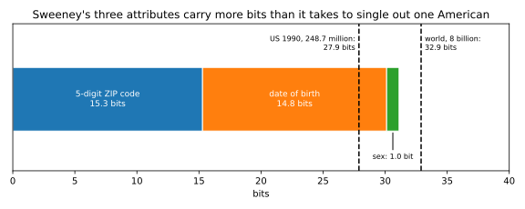
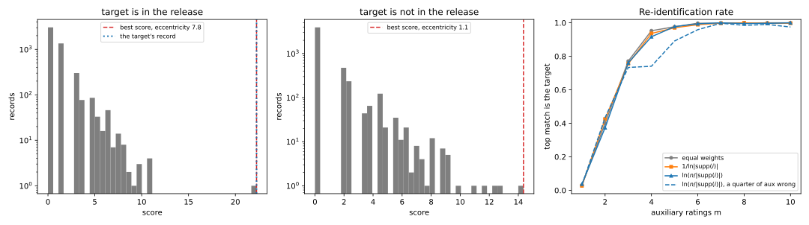
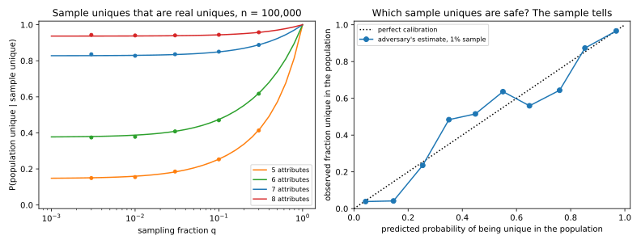

15 Linkage and re-identification
A hospital shares its discharge records with researchers, after deleting the names and keeping ZIP code, date of birth, sex and diagnosis. Is anyone in the file identifiable? Usually, yes. Most people are the only person with their combination of ZIP code, birth date and sex. So anyone who holds a voter roll with names and those three columns can join the two tables and name most rows. This is a linkage attack, and putting a name back on a “de-identified” record is re-identification. Unlike the rest of this part, it attacks the data itself, not a trained model.
The one idea of the chapter is that identifying information is measured in bits, and bits add up. Picking one person out of \(n\) takes \(\log_2 n\) bits, because each bit halves the number of candidates, so 27.9 bits single out one of the 248.7 million people in the United States in 1990. An attribute with 12 equally likely values, such as a birth month, cuts the candidates twelvefold and so carries \(\log_2 12 \approx 3.6\) bits. When attributes are independent their cuts multiply, so their bits add. Once the attributes you know carry a few bits more than \(\log_2 n\), almost everyone is unique.
The running example is a synthetic census of \(n = 10{,}000\) people with eight attributes, which an adversary learns one at a time. Once the known attributes carry 12.90 bits on average (Section 15.4), a third of the people are already unique. That is below the \(\log_2 n = 13.29\) bits needed to name one person, because skewed attributes leave some people in rare combinations. At 20.39 bits 97.5% are unique.
15.1 Quasi-identifiers and the linkage attack
Data protection practice sorts a table’s columns into three kinds. Direct identifiers, such as a name, name a person on their own, while sensitive attributes, such as a diagnosis, must not be tied to a person. Between them sit quasi-identifiers, such as a birth date. Each names nobody alone, but together they often single out one person, and they appear next to names in other datasets. “De-identification” usually removes only the direct identifiers. This section scores a join on the quasi-identifiers with a game in the style of Threat models.
Definition 15.1 (The linkage game) A release \(R\) holds \(n\) records, each with quasi-identifiers and a sensitive attribute. Records with identical quasi-identifiers form an equivalence class, and the \(J\) classes have sizes \(k_1, \dots, k_J\). A challenger draws a target uniformly from the \(n\) records and gives the adversary the target’s quasi-identifiers, as a voter roll would. The adversary outputs one record of \(R\) and wins if it is the target’s. The linkage attack outputs a record drawn uniformly from the target’s class.
A target in a class of \(k\) look-alikes is found one time in \(k\), but it lands in that class \(k\) times as often as in a class of one, so each class adds the same \(1/n\) to the success, whatever its size.
Proposition 15.1 (Linkage success) In the game of Definition 15.1, the linkage attack wins with probability \[\Pr[\text{win}] = \frac1n\sum_{j=1}^J k_j\cdot\frac{1}{k_j} = \frac{J}{n}, \tag{15.1}\] the number of distinct quasi-identifier combinations divided by the number of records. No adversary that sees only the target’s quasi-identifiers does better.
Proof.
- Condition on the target’s class. A target in class \(j\) shares its quasi-identifiers with \(k_j - 1\) other records, so picking one of the \(k_j\) at random wins with probability \(1/k_j\).
- Nothing beats this. Within a class, the target is equally likely to be any of the \(k_j\) records, because it was drawn uniformly and the adversary sees only quasi-identifiers, which are identical within the class. So every guess within the class wins with probability exactly \(1/k_j\). A guess outside the class never wins, since its quasi-identifiers differ from the target’s.
- Average over the target. The target lands in class \(j\) with probability \(k_j/n\), so the success is \(\sum_j\frac{k_j}{n}\cdot\frac{1}{k_j} = \frac Jn\).
Each unique record is a sure win, so the fraction of unique records is a lower bound on the success. Conversely, if every class has at least \(k\) records, then \(n\) records fill at most \(n/k\) classes. So \(J \le n/k\) and the success is at most \(1/k\), the idea that Syntactic anonymity studies.
The game assumes the adversary knows that the target is in the release. Otherwise a unique match may belong to someone who is not in \(R\), and whether that doubt protects anyone is the question of Section 15.6.
Example 15.1 Table 15.1 is a hospital release with names removed. Its last column shows the name a public voter roll gives each combination of the three quasi-identifiers.
| ZIP code | Birth date | Sex | Diagnosis | Name on the voter roll |
|---|---|---|---|---|
| 02138 | 1961-03-14 | F | asthma | Ana Silva |
| 02138 | 1972-11-02 | M | diabetes | Ben Cole |
| 02138 | 1972-11-02 | M | hypertension | Ben Cole |
| 02139 | 1958-06-21 | F | depression | Carla Diaz |
| 02139 | 1990-01-01 | F | migraine | |
| 02139 | 1990-01-01 | F | asthma | |
| 02139 | 1990-01-01 | F | fracture | |
| 02141 | 1983-09-30 | M | pneumonia | Dan Eto |
The join gives Ana’s asthma, Carla’s depression and Dan’s pneumonia with certainty, because each of them matches exactly one record. Ben matches two records, so the adversary is right about him with probability \(\frac12\). The three records born on 1990-01-01 count too, since a target drawn from them is found one time in three. With \(J = 5\) classes for \(n = 8\) records, Equation 15.1 gives a success of \(5/8 = 0.625\).
This is, in miniature, how Latanya Sweeney re-identified the governor of Massachusetts in the late 1990s. In the Cambridge voter roll, six people shared his birth date, three of them were men, and only one lived in his ZIP code.
Sweeney (2000) then estimated from 1990 census tables that 87% of the US population were likely unique on {5-digit ZIP code, date of birth, sex}. The bits explain why (Figure 15.1). Treating each attribute as uniform gives an upper bound on its bits, because equally likely values are the hardest to guess, so about 40,000 ZIP codes, \(365 \times 80 = 29{,}200\) birthdays in about 80 birth years, and two sexes carry at most \[\log_2 40{,}000 + \log_2 29{,}200 + 1 = 15.3 + 14.8 + 1.0 = 31.1 \text{ bits}, \tag{15.2}\] against the 27.9 bits needed to single out one American, which leaves room for most people to be unique.

15.2 Pseudonyms and hashed identifiers
Deleting an identifier also deletes the ability to follow one person through the data. So a common alternative is to replace the identifier by a code that stays the same on all of that person’s records, often its MD5 hash, a standard 128-bit hash. This section shows two separate ways in which the code fails to hide the person.
Definition 15.2 (Pseudonyms) A pseudonym replaces an identifier \(x\) by a code that is the same on every record of the same person. A hashed pseudonym is \(h(x)\) for a public hash function \(h\) that anyone can compute. A keyed hash mixes a secret key into \(h\), so that only the key holder can compute it.
A good hash cannot be run backwards, so the way to invert it is to hash candidate inputs until one matches, and an identifier with a public format can be guessed by listing every value. A pseudonym that nobody can invert still has a second weakness, because all of one person’s records carry it.
Proposition 15.2 (Two ways a pseudonym fails) Suppose the identifiers come from a public set of \(N\) values.
- If the pseudonyms are \(h(x)\) for a public hash with 128-bit outputs that behaves like a random function, giving each input an independent uniform output, an adversary who computes \(h\) on all \(N\) values recovers the identifier behind every pseudonym. It fails only if two identifiers share a hash, which has probability at most \(N^2/2^{129}\). The cost is \(N\) hash computations for the whole release, which doubles with each bit of the identifier.
- Whatever the pseudonyms, an adversary who links any one record to a person learns that person’s pseudonym, and with it every record that carries it.
Proof.
- Part 1: the adversary can list every pseudonym. With no secret key, the possible pseudonyms are the values \(h(x)\) over the \(N\) identifiers, which take \(N\) computations. The adversary keeps a table from each value back to its identifier.
- Each pseudonym maps back to one identifier. Two identifiers with the same hash would make the lookup ambiguous. The birthday bound, Theorem 8.3, says that \(N\) values of a random function with \(2^{128}\) outputs collide with probability at most \(N^2/(2 \cdot 2^{128}) = N^2/2^{129}\).
- Part 2: a consistent pseudonym groups a person’s records. It is the same on every record of one person, so learning it from one record identifies all of them.
Hashing therefore protects only identifiers that are already hard to guess. Phone, licence and identity numbers carry between about 20 and 33 bits (ten-digit phone numbers carry 33.2). A laptop computes millions of MD5 hashes a second, so it lists any of these sets in seconds to hours. A keyed hash stops the enumeration, but not the second failure. Keeping a person’s rows together, the reason to use a pseudonym, makes them one long record, and Section 15.5 shows that such records identify people.
Example 15.2 In 2014 a freedom-of-information request obtained every New York City taxi trip of 2013, about 173 million trips, with each medallion number, the permit number of a cab, and each driver’s licence number replaced by its MD5 hash. One hashed licence seemed to earn thousands of dollars a day. Its code, cfcd208495d565ef66e7dff9f98764da, is the MD5 of the string “0”, as the script of Section 15.7 confirms, the placeholder that every trip with a missing licence carried, so the codes were plain MD5 with no key.
Vijay Pandurangan then inverted all the pseudonyms, as part 1 of Proposition 15.2 predicts. Licence numbers have about 2 million possible values (20.9 bits), and medallion numbers, which follow a few fixed patterns, about 22 million (24.4 bits), so he hashed every possibility in minutes. In miniature, the script hashes all \(10^6\) six-digit numbers, 19.9 bits’ worth, and recovers five secret identifiers.
Passengers had no pseudonym, yet each trip is itself a record of rare details, of the kind Section 15.5 studies. A pickup minute (one of 525,600 in the year) carries 19.0 bits and a pickup square of 100 metres (one of 78,000) carries 16.3 bits. Together that is at most \(19.0 + 16.3 = 35.3\) bits, more than the \(\log_2(173 \times 10^6) = 27.4\) bits that single out one trip, and Anthony Tockar used this in 2014 with photographs of celebrities entering taxis. By part 2 of Proposition 15.2, a passenger who finds their own trip and knows who drove it also learns the driver’s pseudonym, and with it the year’s trips and income.
15.3 How many people are unique
A custodian, the organization that holds and releases data, can count the unique records in its own table, but not in the population behind it, nor for columns an adversary might combine from elsewhere. So it needs a model that predicts the count. The question is the birthday problem of Cryptography basics asked the other way round: how many people share their cell with nobody?
Definition 15.3 (Cells and uniqueness) A population has \(n\) people, and a release may cover all of them. A person’s combination of attribute values is their cell. Under the population model, each person falls in cell \(c\) with probability \(p_c\), independently of everyone else, and \(K\) is the number of cells. A person is unique when nobody else is in their cell, and \(U\) is the number of unique people.
A person is unique when all the others avoid their cell, and averaging that chance over the person’s own cell gives the expected fraction unique.
Theorem 15.1 (Expected fraction unique) Under the population model of Definition 15.3, the expected fraction of unique people is \[\frac{\mathbb E[U]}{n} = \sum_cp_c(1 - p_c)^{n-1}. \tag{15.3}\]
Proof. The plan is to write \(U\) as a sum of one 0/1 counter per person, find the chance that one person is unique, and add.
- Count with indicators. \(U\) is the sum over people of \(\mathbf 1[\text{person } i \text{ is unique}]\). The mean of a sum is the sum of the means even when the terms depend on each other (Lemma 1.1), and the mean of an indicator is its probability. So \(\mathbb E[U]\) is the sum of the \(n\) probabilities, which are equal because everyone draws a cell from the same probabilities.
- Condition on the person’s own cell. Call it \(c\), which has probability \(p_c\).
- Ask the others to stay away. Given \(c\), the person is unique if each of the other \(n - 1\) people lands outside \(c\). They are independent and each avoids \(c\) with probability \(1 - p_c\), so this has probability \((1 - p_c)^{n-1}\).
- Average over the cell. One person is unique with probability \(\sum_cp_c(1 - p_c)^{n-1}\), and by step 1, \(\mathbb E[U]\) is \(n\) times this.
When all \(K\) cells are equally likely, the formula is a single power, close to \(e^{-n/K}\) because \(1 - p\) is close to \(e^{-p}\) when \(p\) is small. The proof of Corollary 15.1 needs to know how close.
Lemma 15.1 (A power and its exponential) For \(0 \le p < 1\) and any exponent \(\ell \ge 0\), \[e^{-p\ell/(1-p)} \le (1 - p)^\ell \le e^{-p\ell}. \tag{15.4}\]
Proof.
- Take logarithms. The power becomes \(\ell\ln(1 - p)\), so the claim is \(-\frac{p}{1 - p} \le \ln(1 - p) \le -p\).
- The upper bound. The logarithm is concave and \(x - 1\) is its tangent line at \(x = 1\), so \(\ln x \le x - 1\) for every \(x > 0\). With \(x = 1 - p\) this is \(\ln(1 - p) \le -p\).
- The lower bound. With \(x = \frac1{1 - p}\) the same inequality gives \(\ln\frac1{1-p} \le \frac1{1-p} - 1 = \frac{p}{1-p}\), and flipping the sign gives \(\ln(1 - p) \ge -\frac{p}{1-p}\).
Corollary 15.1 (Uniform cells) If all \(K\) cells are equally likely, write \(b = \log_2 K\) for the bits a cell carries. The expected fraction unique is \((1 - 1/K)^{n-1}\), and it equals the exponential below up to a relative error of order \(1/K + n/K^2\), \[\frac{\mathbb E[U]}{n} \approx e^{-n/K} = \exp\big(-2^{\log_2n - b}\big). \tag{15.5}\]
Proof.
- Substitute uniform cells. With \(p_c = 1/K\), Equation 15.3 has \(K\) equal terms \(\frac1K(1 - \frac1K)^{n-1}\), which add up to \((1 - \frac1K)^{n-1}\).
- Replace the power by an exponential. Lemma 15.1 with \(p = 1/K\) and \(\ell = n - 1\) puts the power between \(e^{-(n-1)/(K-1)}\) and \(e^{-(n-1)/K}\). These exponents differ by \(\frac{n-1}{K(K-1)}\), of order \(n/K^2\), and replacing \(n - 1\) by \(n\) moves the exponent by only \(1/K\). Two exponentials whose exponents differ by a small amount \(u\) differ by a factor \(e^u \approx 1 + u\), a relative error of \(u\).
- Write the exponent in bits. The average occupancy is \(n/K = 2^{\log_2n}/2^b = 2^{\log_2n - b}\).
For uniform cells, then, the fraction unique depends only on \(b - \log_2n\), the bits beyond those needed to name one person, and the curve is the same for a town and for the planet (Figure 15.2, right). Setting \(\exp(-2^{\log_2 n - b})\) equal to a fraction \(f\) and solving gives \(b - \log_2 n = -\log_2\ln(1/f)\), so half the people are unique once \(b\) exceeds \(\log_2n\) by 0.53 bits, 90% at 3.25 bits more and 99% at 6.64 bits more.
Real attributes are skewed, and skew usually lowers uniqueness, because many people crowd into a few common cells while many rare cells stay empty. This is not a theorem: with 10 equally likely cells and 100 people nobody is unique, but making one cell rare lets the few people in it be unique.
Example 15.3 Sweeney’s three attributes have \(K = 40{,}000 \times 29{,}200 \times 2 = 2.34\times10^9\) cells for \(n = 248.7\) million people, so \(n/K = 0.106\) people per cell. If everyone fell into a uniformly random cell, Equation 15.5 says that a fraction \(e^{-0.106} = 0.899\) would be unique. Sweeney’s 87% is a little lower because ZIP codes and birth years are not equally common. Golle (2006) repeated the estimate with the 2000 census and found 63%, and both estimates depend on how they spread birth dates within the age groups the census publishes.
The often-quoted “33 bits identify anyone” is the point \(b = \log_2 n\). With \(2^{33}\) uniform cells for 8 billion people, \(n/K = 8\times10^9/2^{33} = 0.93\), so only a fraction \(e^{-0.93} = 0.394\) is unique, and 99% needs \(32.9 + 6.64 = 39.5\) bits.
15.4 Uniqueness from marginals and from one population
Theorem 15.1 needs every cell probability, and there can be billions of cells, while a custodian often knows only how common each value of each attribute is. Its answer is also an average over imagined populations, while the custodian has one. This section closes both gaps.
The floor uses the chance that two random people share a cell. Both land in cell \(c\) with probability \(p_c \cdot p_c\), so this collision probability is \(\sum_cp_c^2\), a measure of how crowded a typical cell is.
Proposition 15.3 (A floor from the collision probability) Under the population model, for any cell probabilities, \[\frac{\mathbb E[U]}{n} \ge \Big(1 - \sum_cp_c^2\Big)^{n-1}. \tag{15.6}\] If a cell is a combination of independent attributes, and attribute \(j\) takes the value \(v\) with probability \(p_j(v)\), then \(\sum_cp_c^2 = \prod_j\sum_vp_j(v)^2\). So the floor needs only each attribute’s frequencies, its marginal.
Proof. The plan is to write Equation 15.3 as the average of a convex function, move the average inside the function, and factorize what is left.
- Write the fraction as an average. Draw a random person and note the probability of the cell they landed in. That number is random, and it equals \(p_c\) with probability \(p_c\). With \(g(x) = (1 - x)^{n-1}\), Equation 15.3 is the average of \(g\) at that probability.
- Check that \(g\) bends upwards. Its second derivative, \((n-1)(n-2)(1 - x)^{n-3}\), is never negative on \([0, 1]\) when \(n \ge 2\), so \(g\) is convex there.
- Apply Jensen’s inequality. A convex curve lies above its tangent line at the average point, so the average of \(g\) is at least the average of the tangent line. A line’s average is its value at the average point, which is \(g\) of the average.
- Compute the inner average. The average cell probability is \(\sum_cp_c\cdot p_c = \sum_cp_c^2\), which gives Equation 15.6.
- Factorize for independent attributes. Then \(p_c = \prod_jp_j(c_j)\), where \(c_j\) is the value the cell gives attribute \(j\). Expanding the product of sums gives one term per choice of a value for each attribute, that is, one term per cell, and that term is \(\prod_jp_j(c_j)^2 = p_c^2\): \[\prod_j\sum_vp_j(v)^2 = \sum_c\prod_jp_j(c_j)^2 = \sum_cp_c^2. \tag{15.7}\]
Step 3 is an equality when all cells with positive probability are equally likely, so the floor is tight for uniform cells. It is loose when a few crowded cells push the collision probability up while people in rare cells stay unique.
The entropy \(H = \sum_cp_c\log_2(1/p_c)\) is the average number of bits a cell carries, and it adds over independent attributes by the chain rule, Theorem 5.2. The entropy rule \(e^{-n2^{-H}}\) replaces the cells by \(2^H\) equally likely ones. It is not a bound in either direction, but it is often closer to the exact value than the floor.
The second gap is that the custodian has one population, in which no single person moves the fraction unique by much. McDiarmid’s inequality, Theorem 2.8, makes this a bound. If changing input \(i\) alone moves a function of independent inputs by at most \(d_i\), it strays more than \(\gamma > 0\) above (or below) its mean with probability at most \(\exp(-2\gamma^2/\sum_id_i^2)\).
Proposition 15.4 (One population is enough) Under the population model, for every margin \(\gamma > 0\), \[\Pr\Big[\Big|\frac Un - \frac{\mathbb E[U]}{n}\Big| \ge \gamma\Big] \le 2e^{-n\gamma^2/2}. \tag{15.8}\]
Proof.
- Change one input. \(U\) is a function of the \(n\) independent cells. Moving one person from cell \(u\) to cell \(u'\) changes only the counts of those two cells.
- Bound the change. A cell holds a unique person exactly when its count is 1. The move can switch that on or off in each of the two cells, so \(U\) changes by at most 2 and \(U/n\) by at most \(d_i = 2/n\).
- Apply McDiarmid. With \(d_i = 2/n\) for all \(n\) people, \(\sum_id_i^2 = 4/n\), so each tail is at most \(\exp(-2\gamma^2 n/4) = e^{-n\gamma^2/2}\). The two tails give the factor 2.
Setting the right side equal to a failure probability \(\beta\) says that the fraction unique is within \(\sqrt{2\ln(2/\beta)/n}\) of its expectation with probability \(1 - \beta\). The bound is loose, because it charges every person the worst case, while most moves change \(U\) by 0 or 1.
Example 15.4 The running census has eight independent attributes, with region and occupation skewed. Table 15.2 reveals them one at a time and compares the exact fraction unique of Equation 15.3 with simulation and three approximations.
| Attributes known | Bits \(H\) | Cells \(K\) | Exact | Simulated | Collision bound | Entropy rule | Uniform cells |
|---|---|---|---|---|---|---|---|
| sex, age band, region | 9.31 | 1,280 | 0.0158 | 0.0160 | 0.0000 | 0.0000 | 0.0004 |
| + birth month | 12.90 | 15,360 | 0.3328 | 0.3332 | 0.0834 | 0.2692 | 0.5215 |
| + marital status | 14.60 | 61,440 | 0.5789 | 0.5797 | 0.4237 | 0.6690 | 0.8498 |
| + children | 16.48 | 368,640 | 0.7939 | 0.7918 | 0.7443 | 0.8967 | 0.9732 |
| + occupation | 20.39 | 7,372,800 | 0.9747 | 0.9737 | 0.9736 | 0.9928 | 0.9986 |
| + blood group | 22.57 | 58,982,400 | 0.9925 | 0.9926 | 0.9924 | 0.9984 | 0.9998 |
With 20.39 bits, \(20.39 - 13.29 = 7.1\) bits beyond \(\log_2 n\), 97.5% of people are unique, a little below the 99% that uniform cells give at 6.64 bits beyond, because skew lowers uniqueness. For the same reason, uniform cells overstate uniqueness once birth month is known, by up to \(0.8498 - 0.5789 = 0.27\). Simulation and the exact formula agree to within 0.003. For \(\beta = 0.05\), Equation 15.8 gives a half-width of \(\sqrt{2\ln 40/10^4} = 0.0272\), about five times the largest standard deviation over the 20 simulated populations, 0.0053, so the bound is safe but loose.

15.5 Sparse, high-dimensional data
In 2006 Netflix released about 100 million movie ratings by 480,189 subscribers, with names replaced by random numbers. Each record is a set of (movie, rating, date) triples, 209 on average out of 17,770 movies. There are no columns to join on, and what an adversary knows about a person is partial and noisy, yet Narayanan & Shmatikov (2008) matched Netflix records to named reviews on the Internet Movie Database. This section asks how to match noisy information to a record, and when to trust the match.
No record matches exactly, so the attack scores how well each record agrees with what the adversary knows, item by item. An agreement on a film that half the subscribers rated says little, while one on an obscure film says a lot, so rarer items get larger weights.
Definition 15.4 (The Narayanan–Shmatikov score) The adversary’s auxiliary information \(\mathrm{aux}\) is a set of items \(i\), such as films, with approximate values \(\mathrm{aux}_i\), such as ratings. For a record \(r\) with value \(r_i\) on item \(i\), the agreement \(\mathrm{Sim}(\mathrm{aux}_i, r_i)\) is 1 if \(r\) rated \(i\) within one star of \(\mathrm{aux}_i\), and 0 otherwise. With a weight \(w_i\) for each item, the score of the record is \[\mathrm{Score}(\mathrm{aux}, r) = \sum_{i \in \mathrm{aux}}w_i\,\mathrm{Sim}(\mathrm{aux}_i, r_i). \tag{15.9}\] Narayanan and Shmatikov use \(w_i = 1/\ln\lvert\mathrm{supp}(i)\rvert\), where the support \(\lvert\mathrm{supp}(i)\rvert\) is the number of records that rated item \(i\). Their attack also scores dates, which this chapter leaves out.
The weights can be derived. For each record, the adversary weighs “this record is the target” against “this record is someone unrelated” by the likelihood ratio of what it observed under the two explanations. For independent items its logarithm is a sum over items, the form of Equation 15.9.
Proposition 15.5 (The score is a log-likelihood ratio) Suppose an unrelated record agrees with item \(i\) of the auxiliary information with probability \(s_i\), and the target’s record with probability \(1 - \rho\), independently across items, where \(\rho\) covers wrong or stale information. Then the logarithm of a record’s likelihood ratio is its score Equation 15.9 with the weights \[w_i = \ln\frac{1 - s_i}{s_i} + \ln\frac{1 - \rho}{\rho} \approx \ln\frac{1}{s_i} + \ln\frac{1 - \rho}{\rho}, \tag{15.10}\] plus a constant that is the same for every record; the approximation holds for rare items. If also the target is one of the \(n\) records, each equally likely a priori, and records are independent given which is the target, so that the patterns of all records multiply, then record \(t\) is the target with posterior probability \[\Pr[\text{target} = t \mid \text{data}] = \frac{\mathrm{LR}(t)}{\sum_j\mathrm{LR}(j)}, \tag{15.11}\] where \(\mathrm{LR}(t)\) is the likelihood ratio of record \(t\). So the top-scoring record is the most probable target.
Proof. The plan is to write a record’s pattern of agreements under both explanations, take the log of the ratio, drop the terms shared by all records, and apply Bayes’ rule.
- Record the agreements. Write \(a_i(r) \in \{0, 1\}\) for whether record \(r\) agrees with the auxiliary information on item \(i\).
- The pattern under each explanation. If \(r\) is the target, each item agrees with probability \(1 - \rho\), independently, so the pattern has probability \(P_1(r) = \prod_i(1 - \rho)^{a_i}\rho^{1 - a_i}\), the exponents picking the right factor. If \(r\) is unrelated, it has probability \(P_0(r) = \prod_is_i^{a_i}(1 - s_i)^{1 - a_i}\).
- Take the log of the ratio. The logarithm turns the ratio of products into a sum over items: \[\ln\frac{P_1(r)}{P_0(r)} = \sum_i\Big[a_i\ln\frac{1 - \rho}{s_i} + (1 - a_i)\ln\frac{\rho}{1 - s_i}\Big]. \tag{15.12}\]
- Keep what depends on the record. Collecting the terms with \(a_i\) leaves \(\sum_ia_i\big[\ln\frac{1-\rho}{s_i} - \ln\frac{\rho}{1 - s_i}\big]\) plus \(\sum_i\ln\frac{\rho}{1 - s_i}\), which is the same for every record. Splitting each logarithm of a ratio turns the bracket into \(\ln\frac{1-s_i}{s_i} + \ln\frac{1-\rho}{\rho}\), which is Equation 15.10.
- Bayes’ rule. If \(t\) is the target, record \(t\)’s pattern follows \(P_1\) and every other record’s follows \(P_0\), so all the patterns together have probability \(P_1(t)\prod_{j \ne t}P_0(j)\). The prior is the same for every \(t\), so the posterior of \(t\) is proportional to this. Dividing by \(\prod_jP_0(j)\), which does not depend on \(t\), leaves \(\mathrm{LR}(t) = P_1(t)/P_0(t)\), and normalizing gives Equation 15.11.
For rare items these weights are about \(\ln(1/s_i)\), and like the Narayanan–Shmatikov weights they grow as an item gets rarer, at a different rate (Example 15.5 compares the two). For one record, “target or unrelated” is a hypothesis test, so by the Neyman–Pearson lemma, Theorem 4.1, thresholding the likelihood ratio is the most powerful test.
Because the score adds up evidence, noise costs little: with a wrong item the target loses one term, while unrelated records rarely gain one. What decides success is the bits. Each item contributes its surprisal \(\log_2(1/s_i)\), the bits that single out an event of probability \(s_i\).
Proposition 15.6 (False matches and bits) Take reliable information (\(\rho \to 0\)) with exact agreement required. If an unrelated record agrees on each item \(i\) of a set \(I\) independently with probability \(s_i\), the expected number of the \(n\) records that agree on all of \(I\) by chance is \[n\prod_{i\in I}s_i = 2^{\log_2n - \sum_{i\in I}\log_2(1/s_i)}. \tag{15.13}\]
Proof.
- One record. By independence, an unrelated record agrees on every item of \(I\) with probability \(\prod_{i\in I}s_i\).
- All records. The expected number of false matches is the sum of these probabilities over records (Lemma 1.1), \(n\) times step 1.
- Write it in bits. Writing \(n = 2^{\log_2 n}\) and \(s_i = 2^{-\log_2(1/s_i)}\) turns the product into a power of 2.
So false matches vanish once the items’ bits exceed \(\log_2n\), as in Section 15.3. A film that 1% of subscribers rated carries \(\log_2100 = 6.64\) bits, and three of them carry \(3 \times 6.64 = 19.9\) bits, more than the \(\log_2480{,}189 = 18.9\) bits that single out one Netflix subscriber. Sparsity is the weakness: most items are rated by few people, so each one a person rated is worth many bits.
The top score is the best guess if the target is in the release. If it may not be, the adversary must also decide whether to trust the guess, and a real match should stand out from the other scores.
Definition 15.5 (The eccentricity test) Let \(\mathrm{top}_1 \ge \mathrm{top}_2\) be the two largest scores and \(\sigma\) the standard deviation of all the scores. The eccentricity is the gap between them in units of \(\sigma\), and the eccentricity test declares a match to the top record only if it clears a threshold \(\tau\), \[\frac{\mathrm{top}_1 - \mathrm{top}_2}{\sigma} \ge \tau, \tag{15.14}\] and otherwise says “no match”. Narayanan and Shmatikov used \(\tau = 1.5\).
How often the top score stands out by chance depends on the shape of the score distribution. So \(\tau\) must be calibrated by running the test for people known to be absent from the release, at a small false positive rate (Hypothesis testing). On Netflix, Narayanan and Shmatikov found that 8 ratings, 2 of them wrong, with dates known to within 14 days, identify 99% of records, and 2 ratings with dates within 3 days identify 68%.
Example 15.5 The script draws a scaled-down Netflix of 5,000 users and 4,000 items, with 203,029 ratings and density 0.0102 (the share of user–item pairs rated), close to Netflix’s 0.0118. An item drawn from a random user’s record carries a median of 5.83 bits, against \(\log_2 5000 = 12.29\) bits needed.
The auxiliary information is a few items from the target’s record, with the rating off by one star half the time, and in the noisy setting a quarter of the items are replaced by random popular items. Table 15.3 gives the fraction of 400 targets whose record gets the top score. The third weighting is Equation 15.10 in its approximate form, with \(s_i = \lvert\mathrm{supp}(i)\rvert/n\) and \(\rho = \frac12\), which makes the term in \(\rho\) zero.
| Auxiliary information | Equal weights | \(1/\ln\lvert\mathrm{supp}(i)\rvert\) | \(\ln(n/\lvert\mathrm{supp}(i)\rvert)\) |
|---|---|---|---|
| 2 items | 0.428 | 0.440 | 0.402 |
| 4 items | 0.936 | 0.941 | 0.924 |
| 8 items | 1.000 | 1.000 | 1.000 |
| 8 items, 2 of them wrong | 0.943 | 0.989 | 0.978 |
Two items carry about \(2 \times 5.83 = 11.7\) bits, a little under \(\log_2n\), and re-identify about 43% of targets, while four carry about 23 bits and re-identify 93%. With 8 items of which 2 are wrong, the rarity weightings re-identify 98–99%, as Narayanan and Shmatikov found. Equal weights fall to 94%, because a wrong popular item helps many unrelated records. The two rarity weightings differ by less than two standard errors, each \(\sqrt{0.98 \times 0.02/400} = 0.007\). The derived weighting of Proposition 15.5 trails with 2 and 4 items, by 0.038 and 0.017, since its \(\rho = \frac12\) and independence model do not describe this noise.
To test the eccentricity (Figure 15.3), the script also scores 400 outsiders drawn from the same model, so that any match declared for them is false. With 8 items, 2 of them wrong, and \(\tau = 1.5\), 94.8% of insiders, the targets in the release, are correctly re-identified, but 26.3% of outsiders are also “matched”. The median eccentricity is 7.32 for insiders and 0.72 for outsiders, but the outsiders’ distribution has a long tail, so holding false matches to 1% of outsiders takes \(\tau = 4.83\). That still re-identifies 73.0% of insiders (Figure 15.4).


15.6 Does releasing a sample protect?
Statistical agencies often release a sample, such as 1% of a census. The argument is plausible deniability: a record unique in the sample need not be unique in the population, because the person you have in mind may share their attributes with someone who was not sampled. Yet Rocher, Hendrickx & de Montjoye (2019) predicted, from a model fitted to a sample, that 99.98% of Americans would be correctly re-identified in any dataset with 15 demographic attributes. This section derives when a match found in a sample can be trusted.
Each of \(n\) people is in the release independently with probability \(q\), the sampling rate. Take a cell with probability \(p\), and let \(\lambda = (n - 1)p\) be the expected number of other people in it. The adversary can start from a person or from a record.
From a person, the adversary knows a target’s cell and finds exactly one record there. Either the target was sampled and no one else in the cell was, or exactly one other person was sampled instead, which is likelier in a crowded cell.
Proposition 15.7 (A match from a person) Given that the target’s cell holds exactly one record of the release, that record is the target’s with probability \[\kappa = \frac{1}{1 + \frac{(n-1)p(1 - q)}{1 - pq}} \approx \frac{1}{1 + \lambda(1 - q)}, \tag{15.15}\] where the approximation holds for small \(p\).
Proof. The plan is to compute the right and the wrong story given the number of others in the cell, and then average both over that number.
- Name the crowd. Each of the \(n - 1\) others is in the target’s cell with probability \(p\), independently, so their number is \(W \sim \mathrm{Bin}(n - 1, p)\).
- The two stories. Given \(W\), the right match needs the target sampled and none of the others, with probability \(q(1 - q)^W\). The wrong one needs the target unsampled and exactly one of the \(W\) others sampled, with probability \((1 - q)\cdot Wq(1 - q)^{W-1} = Wq(1 - q)^W\).
- Condition on one match. By the definition of a conditional probability, a correct match has probability \(\Pr[\text{right}]/\big(\Pr[\text{right}] + \Pr[\text{wrong}]\big)\), and each of these unconditional probabilities is its story averaged over \(W\). The factor \(q\) cancels, leaving \[\kappa = \frac{\mathbb E[(1 - q)^W]}{\mathbb E[(1 + W)(1 - q)^W]}. \tag{15.16}\]
- The two averages. Both come from the generating function \(\mathbb E[z^W]\). Each of the \(n - 1\) others contributes an independent factor \(z\) to \(z^W\) if it is in the cell and 1 if not, so \(\mathbb E[z^W] = (1 - p + pz)^{n-1}\), which is \((1 - pq)^{n-1}\) at \(z = 1 - q\). For the second average, \(Wz^W = z\frac{\mathrm d}{\mathrm dz}z^W\), and the derivative of \((1 - p + pz)^{n-1}\) is \((n-1)p(1 - p + pz)^{n-2}\), so multiplying by \(z\) and setting \(z = 1 - q\) gives \(\mathbb E[W(1 - q)^W] = (n-1)p(1 - q)(1 - pq)^{n-2}\).
- Simplify. The denominator of step 3 is the first average plus the second. Dividing both by \((1 - pq)^{n-1}\) turns the first into 1 and the second into \(\frac{(n-1)p(1-q)}{1 - pq}\), which gives Equation 15.15. For small \(p\), \(1 - pq \approx 1\) and \((n-1)p = \lambda\).
From a record, the adversary takes a record alone in its cell in the release and looks the cell up in a population register, such as a voter roll. Being alone in the sample says that nobody else in the cell was sampled, so the question is whether anyone in the cell was left out.
Proposition 15.8 (A match from a record) A record that is alone in its cell in the release is alone in the population with probability \[\xi = \left(\frac{1 - p}{1 - pq}\right)^{n-1} \approx e^{-\lambda(1 - q)}. \tag{15.17}\]
Proof.
- Sort the others into three groups. Each other person is, independently, in the cell and sampled (probability \(pq\)), in the cell and not sampled (\(p(1 - q)\)), or outside the cell (\(1 - p\)).
- Condition on being alone in the sample. This rules out the first group for every other person. People are independent, so for each of them the chances of the other two groups are divided by their total, \(1 - pq\).
- Ask that nobody hides in the cell. All \(n - 1\) others must be outside the cell, with probability \(\big(\frac{1-p}{1-pq}\big)^{n-1}\). Subtracting the numerator from the denominator writes the ratio as \(1 - \frac{p(1 - q)}{1 - pq}\), close to \(1 - p(1 - q)\) for small \(p\), so by Lemma 15.1 the power is about \(e^{-\lambda(1 - q)}\).
Over a whole release, the share of sample-unique records that are unique in the population compares two expected counts, each a sum of indicators as in Theorem 15.1.
Proposition 15.9 (Sample uniques that are real) Under the population model, the expected number of records unique in both the release and the population, divided by the expected number unique in the release, is \[\frac{\sum_cp_c(1 - p_c)^{n-1}}{\sum_cp_c(1 - p_cq)^{n-1}}. \tag{15.18}\] It tends to the population’s fraction unique, Equation 15.3, as \(q \to 0\) and is 1 at \(q = 1\).
Proof.
- Records unique in both. A population unique is unique in the sample if it is sampled, and sampling is independent of the cells. So the expected number is \(q\) times that of population uniques, \(nq\sum_cp_c(1 - p_c)^{n-1}\) by Theorem 15.1.
- Records unique in the sample. Person \(i\) in cell \(c\) is sampled, and each other person must be outside \(c\) or unsampled, which rules out only being in \(c\) and sampled, probability \(p_cq\). Adding over people gives \(nq\sum_cp_c(1 - p_cq)^{n-1}\).
- Divide. The factor \(nq\) cancels. As \(q \to 0\) the denominator tends to \(\sum_cp_c = 1\), and at \(q = 1\) the two sums are equal.
Sampling only helps people in crowded cells. It enters Equation 15.15 and Equation 15.17 through the factor \(1 - q\) on \(\lambda\), so for rare combinations, \(\lambda \ll 1\), both are close to 1 whatever \(q\) is. Shrinking \(q\) only raises \(\lambda(1 - q)\) towards \(\lambda\), so neither falls below its value at \(q = 0\): \(\kappa \ge 1/(1 + \lambda)\) and \(\xi \ge e^{-\lambda}\).
At small sampling rates, by Equation 15.18, the share of sample uniques that are unique in the population is the population’s own fraction unique. So a 1% sample gives deniability only to the people who were not unique anyway. The adversary can also estimate each record’s \(p\) from the sample and compute \(\xi\), which tells it which matches to trust.
Example 15.6 Table 15.4 gives both approximate probabilities for a single cell. With \(\lambda = 0.1\) and \(q = 0.01\), for instance, \(\kappa = 1/(1 + 0.1 \times 0.99) = 1/1.099 = 0.910\).
| \(\lambda\) (expected others in the cell) | \(\kappa\), \(q = 0.01\) | \(\kappa\), \(q = 0.5\) | \(\xi\), \(q = 0.01\) | \(\xi\), \(q = 0.5\) |
|---|---|---|---|---|
| 0.1 | 0.910 | 0.952 | 0.906 | 0.951 |
| 0.5 | 0.669 | 0.800 | 0.610 | 0.779 |
| 2 | 0.336 | 0.500 | 0.138 | 0.368 |
Going from a 50% to a 1% sample lowers \(\kappa\) by \(0.952 - 0.910 = 0.04\) for a rare cell and by \(0.500 - 0.336 = 0.16\) for a crowded one. A larger census of \(n = 100{,}000\) people with the first seven attributes has 82.8% unique. Equation 15.18 gives 0.8301 of sample uniques being population-unique at \(q = 0.01\) (simulated: 0.8334 over 19,951 sample uniques in 20 samples), 0.8493 at \(q = 0.1\) and 0.9235 at \(q = 0.5\).
The adversary’s own estimate works too (Figure 15.5, right). From one 1% sample with 993 sample-unique records, it treats the attributes as independent, multiplies their estimated frequencies to get each record’s cell probability, and computes \(\xi\) by Equation 15.17. Its mean prediction is 0.817 against an actual 0.824. The 415 records it rates above 0.95 are population-unique 99.3% of the time, while the 119 it rates below 0.5 are unique 30.3% of the time.

15.7 Code
The script code/linkage.py computes every number in this chapter and draws every figure. From the repository root:
uv run python code/part02-attacks/linkage.py| Experiment | Result |
|---|---|
| Bits | \(\log_2(8\times10^9) = 32.9\); \(\log_2(248.7\times10^6) = 27.9\); ZIP 15.3 + birth date 14.8 + sex 1.0 = 31.1 bits |
| Sweeney, uniform cells | \(K = 2.34\times10^9\); \(n/K = 0.106\); fraction unique 0.899 |
| World, uniform cells | 33 bits: fraction unique 0.394. Bits needed for 50%, 90%, 99%: 33.4, 36.1, 39.5 |
| Toy release | Classes of sizes 1, 1, 1, 2, 3: linkage success 0.625 |
| Hashed identifiers | MD5 of “0”: cfcd2084…. All \(10^6\) six-digit identifiers (19.9 bits) hashed, 5 of 5 inverted. Taxi: 173 million trips (27.4 bits), licences 20.9 bits, medallions 24.4 bits; pickup minute 19.0 + pickup square 16.3 = 35.3 bits; phone numbers 33.2 bits |
| Synthetic census, \(n = 10^4\) | Table 15.2; McDiarmid 95% half-width 0.0272 |
| Synthetic ratings, 5,000 users | 203,029 ratings, density 0.0102; median bits per item 5.83; rates in Table 15.3 |
| Eccentricity, 8 items, 2 wrong | \(\tau = 1.5\): insiders 0.948, outsiders 0.263. \(\tau = 4.83\): insiders 0.730, outsiders 0.010 |
| Sampling, \(n = 10^5\), 7 attributes | Population unique 0.828. Sample uniques that are unique: 0.8301 (\(q = 0.01\); simulated 0.8334), 0.8493 (\(q = 0.1\)), 0.9235 (\(q = 0.5\)) |
| \(\kappa\) and \(\xi\) | Table 15.4 |
| Adversary’s estimate of \(\xi\), 1% sample | Mean predicted 0.817, actual 0.824; above 0.95: predicted 0.980, actual 0.993; below 0.5: predicted 0.284, actual 0.303 |
tests/test_linkage.py checks that the output still matches.
15.8 Summary
| Result | Statement | Use |
|---|---|---|
| Proposition 15.1 | Linkage success is \(J/n\) | Scoring a release; at most \(1/k\) if every class has \(k\) or more records |
| Proposition 15.2 | \(N\) hashes invert every unkeyed pseudonym; a pseudonym links a person’s records | Hashing protects only identifiers with many bits; licence, phone and identity numbers (20 to 33 bits) are listed in hours; a key stops enumeration, not linkage |
| Theorem 15.1 | \(\mathbb E[U]/n = \sum_cp_c(1 - p_c)^{n-1}\) | Risk from a model of the population; compute the exact sum |
| Lemma 15.1 | \(e^{-p\ell/(1-p)} \le (1 - p)^\ell \le e^{-p\ell}\) | “Everyone avoids my cell” as an exponential |
| Corollary 15.1 | Uniform cells: \(\exp(-2^{\log_2n - b})\) | \(\log_2n\) bits name one person (33 for the world); 6.64 bits more make 99% unique; skew usually lowers uniqueness |
| Proposition 15.3 | \(\mathbb E[U]/n \ge (1 - \sum_cp_c^2)^{n-1}\) | A floor from the marginals; tight for uniform cells |
| Proposition 15.4 | \(U/n\) is within \(\gamma\) of its mean except with probability \(2e^{-n\gamma^2/2}\) | One population is enough |
| Proposition 15.5 | The score with \(w_i \approx \ln(1/s_i) + \ln\frac{1-\rho}{\rho}\) is the log-likelihood ratio | The top score is the most probable target |
| Proposition 15.6 | \(n\prod_{i\in I}s_i\) expected false matches | Each rare item is worth its surprisal, so a few facts suffice, noise or not |
| Definition 15.5 | Match only if \((\mathrm{top}_1 - \mathrm{top}_2)/\sigma \ge \tau\) | Calibrate \(\tau\) on outsiders at a small false positive rate |
| Proposition 15.7, Proposition 15.8 | \(\kappa \approx 1/(1 + \lambda(1 - q))\), \(\xi \approx e^{-\lambda(1 - q)}\) | A sample protects only people in crowded cells |
| Proposition 15.9 | The share of sample uniques that are real | The population’s rate as \(q \to 0\); removing names, pseudonymizing or sampling does not anonymize a dataset |
15.9 References
- Sweeney, “Simple Demographics Often Identify People Uniquely” (Carnegie Mellon University, Data Privacy Working Paper 3, 2000): the 87% estimate for {ZIP code, birth date, sex} and its variants with coarser geography. Sweeney, “k-Anonymity: A Model for Protecting Privacy” (International Journal of Uncertainty, Fuzziness and Knowledge-Based Systems, 2002) tells the Massachusetts story in its introduction.
- Golle, “Revisiting the Uniqueness of Simple Demographics in the US Population” (Workshop on Privacy in the Electronic Society, 2006): the same estimate from the 2000 census.
- Narayanan & Shmatikov, “Robust De-anonymization of Large Sparse Datasets” (IEEE Symposium on Security and Privacy, 2008): the score, the eccentricity test and the Netflix experiments.
- Rocher, Hendrickx & de Montjoye, “Estimating the success of re-identifications in incomplete datasets using generative models” (Nature Communications, 2019): why sampling and incompleteness do not protect.
- Pandurangan, “On Taxis and Rainbows” (blog post, 2014), and Tockar, “Riding with the Stars: Passenger Privacy in the NYC Taxicab Dataset” (Neustar Research blog, 2014): the two taxi attacks.
- Barth-Jones, “The ‘Re-Identification’ of Governor William Weld’s Medical Information: A Critical Re-Examination of Health Data Identification Risks and Privacy Protections, Then and Now” (2012): what the Massachusetts story does and does not show about ordinary people.
- Dwork, McSherry, Nissim & Smith, “Calibrating Noise to Sensitivity in Private Data Analysis” (2006): where the response to these attacks starts, with a guarantee that holds whatever auxiliary information the adversary has.